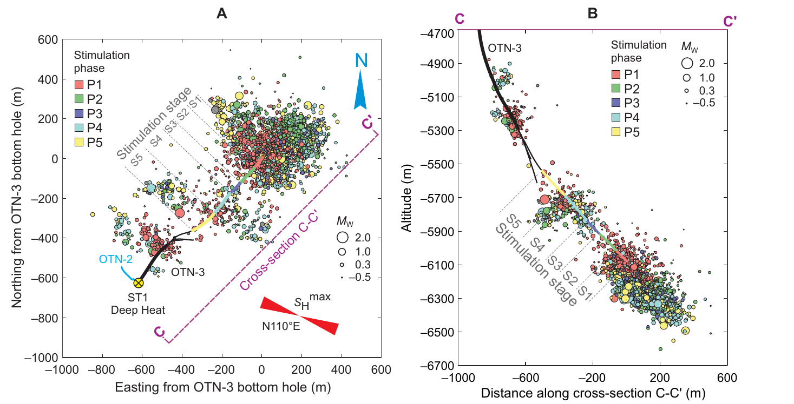
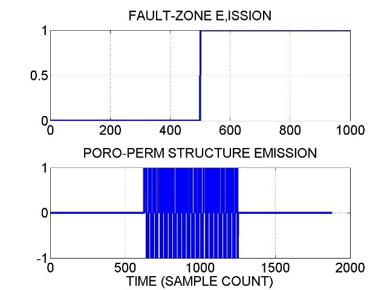
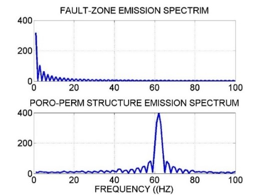

Beranda / Kuliah Umum / GeoFlow Imaging
Keynote · Indonesian Geological Research Forum #7 · IAGI
Memetakan Permeabilitas Bawah Permukaan untuk Menekan Risiko Eksplorasi Panas Bumi
Dari eksperimen EGS 6 km di Finlandia ke rekaman mikroseismik sumur dalam pada 2–4 kHz: mengapa keterhubungan permeabilitas menjadi kunci eksplorasi panas bumi, dan bagaimana gagasan GeoFlow Imaging berusaha memetakannya hingga resolusi ≈ 50 m.
Presentasi
Jelajahi 23 slide langsung di sini (gunakan panah atau klik), atau buka layar penuh.
Di dalam presentasi: ←/→ atau klik untuk navigasi, F layar penuh, P cetak PDF.
Tujuan belajar
Setelah membaca materi ini, Anda diharapkan dapat:
- menjelaskan mengapa permeabilitas dan keterhubungannya menjadi ketidakpastian utama eksplorasi panas bumi;
- membaca angka eksperimen EGS Otaniemi (volume, tekanan, konduktivitas hidrolik) beserta pelajaran seismologisnya;
- membedakan model kerak berlapis, acak, dan pink, serta konsekuensinya bagi distribusi permeabilitas;
- membaca waveform dan spektrum mikroseismik sumur dalam, dan menghubungkan frekuensi dengan panjang gelombang serta skala heterogenitas;
- menilai bukti dan batas klaim, lalu merancang uji validasi dari sudut geologi, geokimia, dan reservoir engineering.
1. Latar belakang: dua sumur 6 km di Finlandia
Eksperimen EGS terdalam di lingkungan perkotaan, dan apa yang diajarkannya tentang permeabilitas.
Pada Juni–Juli 2018, proyek St1 Deep Heat di Otaniemi, Espoo (dekat Helsinki), memompa 18.160 m³ air tawar (netto) selama 49 hari ke dalam basement kristalin Prakambrium pada kedalaman 5,5–6,1 km. Tujuannya membuat reservoir EGS untuk panas dasar jaringan pemanas kota. Pemantauan seismik hampir waktu nyata dengan sistem lampu lalu lintas menjaga magnitudo maksimum di Mw 1,9, di bawah batas 2,0 yang ditetapkan otoritas (Kwiatek dkk., 2019). Proyek ini digagas grup St1; pendiri dan Ketua Dewan St1, Mika Anttonen, mengaitkannya dengan strategi investasi energi terbarukan perusahaan.

| Parameter | Nilai |
|---|---|
| Total dipompa | 18.538 m³; kembali 378 m³; tertahan 18.160 m³ |
| Interval injeksi | 5,5–6,1 km, lima tahap (S1–S5) |
| Tekanan kepala sumur | 60–90 MPa (batas pompa 95 MPa) |
| Laju injeksi | 400–800 liter per menit |
| Jaringan seismik | 24 stasiun bor: 12 level di OTN-2 (2,20–2,65 km) dan 12 satelit |
| Katalog | 6.150 event awal; 43.882 event setelah diproses ulang; 1.977 event direlokasi (presisi 27 m dan 66 m untuk 68% dan 95%) |
Hiposenter terlokasi ulang membentuk tiga gugus utama yang terpisah ruang tetapi aktif bersamaan, meluas ke tenggara–barat laut, hampir sejajar dengan tegangan horizontal maksimum (N110°E). Awan event tidak menjajar pada satu bidang patahan; radius sumber 11–34 m cocok dengan aktivasi jaringan rekahan terdistribusi.

Sisi hidrolik dan hasil akhirnya
Kukkonen dkk. (2023) melaporkan konduktivitas hidrolik alami sekitar 5×10−10–5×10−9 m/s (permeabilitas ≈ 10−17–10−16 m²), sesuai model kerak getas pada kedalaman itu. Stimulasi menaikkannya ke sekitar 10−8–10−7 m/s, tetapi nilai itu turun kembali setelah tekanan dilepas. Hanya sebagian kecil rekahan yang terbuka dan konduktif, sehingga medium bersifat heterogen secara hidrolik. Pada stimulasi OTN-2 (2020), sinyal tekanan terekam di OTN-3, tetapi pilot itu tidak pernah dikomersialkan: peningkatan konduktivitas tidak memadai agar sistem sirkulasi panas bekerja. Menurut rilis St1, kedua sumur kini dibuka untuk riset (2024).
Pelajaran. Seismisitas yang terkendali tidak menjamin aliran yang dapat dipakai, dan dua sumur yang berdekatan tidak otomatis terhubung. Yang menentukan adalah jaringan rekahan yang bersambung — sifat permeabilitas bawah permukaan yang justru paling sulit dipetakan.
2. Risiko eksplorasi dan tiga disiplin
Mengapa celah pengetahuan tentang permeabilitas mahal.
Studi global IFC (2013) atas 52 lapangan menemukan keberhasilan rata-rata 50% untuk sumur pertama dalam satu lapangan, 59% untuk lima sumur pertama, dan 78% untuk seluruh sumur yang statusnya terverifikasi. Biaya pengeboran menyumbang 35–40% dari biaya modal proyek dan hilang bila sumber daya tidak ditemukan. IFC mendefinisikan sukses terutama dari kapasitas sumur (MWe); angkanya informatif untuk gambaran umum, bukan prediksi untuk lapangan tertentu.
| Disiplin | Mengukur | Celah terhadap permeabilitas |
|---|---|---|
| Geologi dan struktur | Rekahan, sesar, litologi, alterasi | Rekahan terbuka atau tertutup dan keterhubungan 3D tidak terlihat |
| Geokimia | Temperatur reservoir, asal fluida, tracer | Titik atau rata-rata; jalur dan laju aliran hanya disimpulkan |
| Reservoir engineering | Uji sumur, injektivitas, interferensi, kurva produksi | Baru ada setelah bor, dan hanya di sekitar sumur |
| Geofisika konvensional | Resistivitas, densitas, kecepatan | Sifat batuan, bukan sifat aliran |
3. Gagasan: kerak pink dan mikroseismik sebagai pengamat aliran
Hipotesis kerja GeoFlow Imaging (Leary dan Malin, 2022; Leary dkk., 2024).
Kerak sering digambarkan berlapis (deterministik) atau acak (white noise). GeoFlow Imaging mengusulkan model ketiga: porositas atau poro-konektivitas berspektrum pink, S(k) ~ 1/kβ dengan β ≈ 1, yang berkorelasi spasial lintas skala. Dasar empirisnya adalah penskalaan hukum-pangkat yang diamati pada data log sumur.


Bila permeabilitas bergantung eksponensial pada porositas, maka permeabilitas menjadi lognormal: sedikit volume yang sangat permeabel membentuk gugus aliran terhubung.
Pola ini sejalan dengan pola Pareto 80/20 pada produktivitas sumur. Pada sampel produksi minyak AS tahun 1960 di bawah, sekitar 29% sumur memberi sekitar 85% produksi — sebuah analog, bukan bukti untuk panas bumi.

Mikroseismik sebagai pengamat aliran
Hipotesisnya: sebagian event mikroseismik adalah emisi dari struktur poro-permeabel yang bertekanan lebih, sehingga lokasinya menandai jalur aliran aktif. Diagnostiknya empat: distribusi ukuran (momen cenderung lognormal), korelasi spasial G(r) ~ 1/rp dengan p ≈ 1, bentuk gelombang (first-motion berosilasi dua arah), dan waktu kejadian terhadap injeksi.


Bukan semua event. Yang diklaim hanya subpopulasi yang lolos beberapa diagnostik sekaligus. Membedakannya dari slip sesar adalah inti ilmiah yang paling perlu diuji.
4. Rekaman sumur dalam pada 2–4 kHz
Contoh waveform Utah FORGE dan Helsinki, dan apa yang terlihat pada kHz dan deka Hertz.
Sensor permukaan umumnya hanya melihat deka Hertz. Di Helsinki, array geofon di OTN-2 (2,20–2,65 km) merekam pada 2 kHz. Pada stimulasi Utah FORGE April 2022, satu kanal regangan pada kedalaman 1,4 km merekam kontinu beberapa hari pada 4 kHz (Leary dkk., 2024; data Whidden dkk., 2023). Katalog data FORGE juga melaporkan rekaman DAS (distributed acoustic sensing, serat optik sebagai rangkaian sensor regangan) pada 10 kS/s untuk April 2024. Geofon sumur ber-sampling kHz sudah lama dipakai pada pemantauan rekah hidrolik; yang relatif baru adalah rekaman EGS kontinu yang terbuka untuk riset dan kanal serat optik yang rapat.
Contoh waveform


Spektrum: kHz dan deka Hertz sekaligus
Spektrum rata-rata event Utah menunjukkan energi besar di sekitar 1 kHz dan, tidak terduga, puncak amplitudo pada 10–100 Hz. Dua puncak tajam pada frekuensi yang sama di semua event adalah artefak sensor dan dibuang dengan filter digital (garis merah).

Deka Hertz sebagai sisa hamburan
Di Helsinki, sumber berjarak ≈ 4 km dari sensor. Spektrum latar sebelum gelombang P memuat deka Hertz tetapi hampir tanpa kHz, dan bentuknya mengikuti spektrum event. Itu yang diharapkan bila latar adalah residu hamburan wavelet kHz sepanjang jalan. Di Utah, jarak sumber–sensor hanya ≈ 200–400 m sehingga komponen kHz masih menonjol. Kesimpulannya: energi deka Hertz bukan bagian langsung dari proses sumber, melainkan hasil hamburan oleh heterogenitas medium.

Koda hiperbolik
Peluruhan amplitudo koda umumnya diasumsikan eksponensial (satu skala hamburan). Data Utah lebih cocok dengan kurva hiperbolik bentuk Arps, H(t) = 1/(1 + b′t/t₀)^(1/b′) dengan 1 < b′ < 2. Nilai b′ ≈ 1,5 (yang paling sering) setara parameter Arps b ≈ 0,5. Penafsiran GFI: seperti penurunan produksi sumur yang hiperbolik karena banyak skala aliran, koda hiperbolik mencerminkan banyak skala hamburan, yaitu heterogenitas multiskala yang selaras dengan permeabilitas pink.

5. Dari deka Hertz ke resolusi ≈ 50 m
Mengapa pita deka Hertz memungkinkan heterogenitas dimodelkan.
Panjang gelombang λ = V/f. Dengan kecepatan kasar V ≈ 5 km/s:
| Frekuensi | Panjang gelombang | Keterangan |
|---|---|---|
| 1 kHz | ≈ 5 m | Emisi sumber; tidak sampai ke sensor permukaan |
| 100 Hz | ≈ 50 m | Ujung atas pita deka Hertz |
| 30 Hz | ≈ 170 m | Dekat rata-rata geometrik ≈ 160 m |
| 10 Hz | ≈ 500 m | Ujung bawah pita |
Hamburan paling kuat terjadi ketika skala heterogenitas sebanding dengan panjang gelombang. Karena itu sisa hamburan di pita deka Hertz (10–100 Hz) membawa informasi heterogenitas pada skala 50–500 m. Bila heterogenitas itu dapat dimodelkan — misalnya dengan model kecepatan berspektrum pink yang dikalibrasi pada pita tersebut — resolusi model bawah permukaan sekitar 50 m menjadi target yang masuk akal. (Vp batuan dasar Helsinki terukur 6,39 km/s, sehingga nilai λ bergeser sekitar seperempat.)
Syarat dan batas. Resolusi bergantung pada pita frekuensi, geometri sensor, rasio sinyal-derau, dan akurasi model kecepatan. Angka ≈ 50 m adalah target yang harus divalidasi, bukan hasil yang sudah terbukti.
6. Data terbuka untuk berlatih
Status akses dan DOI perlu diperiksa pada halaman dataset sebelum dipakai.
| Sumber | Data |
|---|---|
| Utah FORGE (Geothermal Data Repository) | Katalog Meq stimulasi 2022 sumur 16A(78)-32 (ISC, doi:10.31905/52CC4QZB; GDR 1558); DAS 2022 sumur 78-32 dan 78B-32 (GDR 1393); DAS rekaman event Meq uji sirkulasi Juli 2023 (GDR 1747); DAS April 2024, termasuk set Neubrex 10 kS/s (GDR 1680) dan set frekuensi rendah (GDR 1749) |
| St1 Deep Heat (GFZ Data Services) | Katalog terlokasi ulang beserta parameter sumber, 4.580 event (doi:10.5880/GFZ.4.2.2019.001); katalog resolusi tinggi (Leonhardt dkk., 2021); waveform stasiun GIPP untuk stimulasi 2018 (doi:10.5880/GIPP.201802.1) dan 2020 (doi:10.5880/GIPP.201925.1). Array 12 level OTN-2 (2 kHz) belum terkonfirmasi sebagai data terbuka. |
7. Yang belum terbukti
- Mekanisme event. Slip sesar dan event terkait aliran harus dibedakan lewat waveform, statistik, dan waktu terhadap aliran fluida.
- Solusi tidak unik. Kecocokan waktu tempuh tidak berarti kerak sebenarnya pulih; klaim dibatasi pada ekuivalensi waktu tempuh.
- Proksi, bukan nilai absolut. Peta memeringkat struktur aliran aktif; permeabilitas absolut memerlukan kalibrasi independen.
- Resolusi ≈ 50 m. Target yang bergantung pada pita frekuensi, geometri sensor, dan model kecepatan; belum divalidasi terhadap feed zone.
- Generalisasi. Data berasal dari stimulasi EGS (Utah, Helsinki); lapangan vulkanik hidrotermal harus diuji tersendiri.
8. Latihan dan pertanyaan diskusi
Klik tiap latihan untuk melihat jawaban singkat.
Latihan 1 — Panjang gelombang
Jawaban: V = 5 km/s: 500, 167, 50 m. V = 6,39 km/s: 639, 213, 64 m.
Latihan 2 — Permeabilitas ke konduktivitas hidrolik
Jawaban: K ≈ 10−17 × 943 × 9,81 / 2,3×10−4 ≈ 4×10−10 m/s, tepat di rentang alami Otaniemi.
Latihan 3 — Kurva belajar sumur
Jawaban: Lima sumur × 0,59 ≈ 2,95 sukses; kurangi 0,5 untuk sumur pertama, sisa ≈ 2,45 dari empat sumur, atau ≈ 61%.
Latihan 4 — Data terbuka
Pertanyaan diskusi
- Mengapa dua sumur yang berdekatan belum tentu terhubung? Sebutkan dua faktor geologi dan satu faktor reservoir engineering.
- Bukti apa yang paling meyakinkan untuk membedakan event slip sesar dari event terkait aliran?
- Apa implikasi koda hiperbolik bagi pemodelan hamburan di lapangan vulkanik hidrotermal?
- Jika resolusi ≈ 50 m tercapai, uji validasi apa yang paling meyakinkan dari sudut geokimia dan reservoir engineering?
Data & sumber
Finlandia. Angka stimulasi, seismisitas, tegangan, dan katalog: Kwiatek dkk. (2019). Angka konduktivitas hidrolik dikutip dari abstrak Kukkonen dkk. (2023). Status 2024: rilis St1.
Waveform dan spektrum. Leary dkk. (2024), Fig. 1–4, 6, 7 dan 12; data Utah FORGE dari Whidden dkk. (2023) dan data St1 Deep Heat. Gambar dikutip untuk keperluan pengajaran; hak cipta ada pada penulis aslinya.
Lisensi gambar. Gambar Kwiatek dkk. (2019) berlisensi CC BY-NC 4.0 dan dipotong dari aslinya. Ilustrasi model kerak dan analisis produksi minyak adalah karya penulis.
Catatan: materi ini merangkum hipotesis GeoFlow Imaging yang masih diuji, bukan konsensus. Angka resolusi ≈ 50 m adalah target, bukan hasil terbukti. Disiapkan untuk keperluan pendidikan.
Rujukan
- Kwiatek, G. dkk. (2019). Controlling fluid-induced seismicity during a 6.1-km-deep geothermal stimulation in Finland. Science Advances 5, eaav7224. doi:10.1126/sciadv.aav7224
- Kukkonen, I. T. dkk. (2023). Hydraulic conductivity of the crystalline crust: insights from hydraulic stimulation and induced seismicity of an enhanced geothermal system pilot reservoir at 6 km depth, Espoo, southern Finland. Geothermics.
- Leary, P., Malin, P., Geiser, P., Sicking, C. (2024). Deep seismic sensor stimulation wavefield empirics for ambient crust surface seismic flow imaging. Proc. 49th Workshop on Geothermal Reservoir Engineering, Stanford University.
- Leary, P., Malin, P. (2022). Observation of Meq hHz coda in the ambient crust — implications for surface seismic array flow imaging. Proc. 47th Workshop on Geothermal Reservoir Engineering, SGP-TR-223.
- Whidden, K., Petersen, G., Pankow, K. (2023). Seismic monitoring of the 2022 Utah FORGE stimulation (dikutip pada Leary dkk., 2024).
- Dyer, B., Karvounis, D., Bethmann, F. (2023). Microseismic event catalogues from the well 16A(78)-32 stimulation in April 2022, Utah FORGE. ISC Dataset Repository. doi:10.31905/52CC4QZB
- IFC (2013). Success of Geothermal Wells: A Global Study. International Finance Corporation.
- Arps, J. J. (1945). Analysis of decline curves. Transactions of the AIME 160, 228–247.